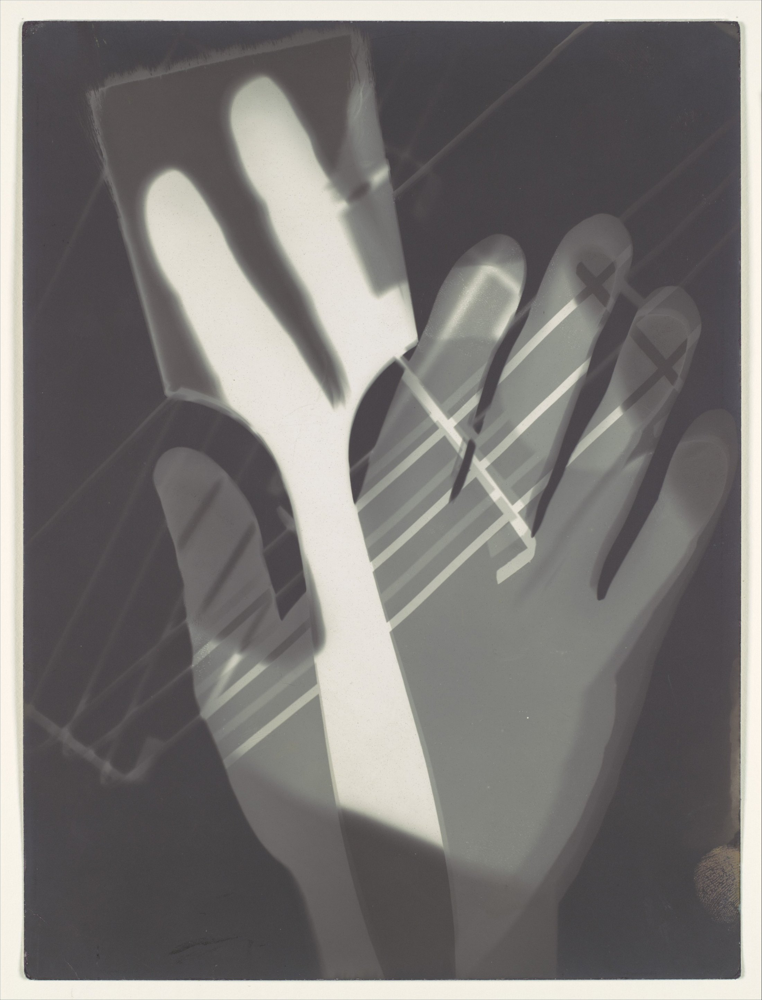

画笔没有画，手也没有握；一次接触，被显影成了时间。
白色手臂斜劈画面；手指向上，细线横切。三个方向彼此抵消，让静止相纸产生速度。
近黑承重，纯白前冲，中灰后退。无彩色靠明度分层，骨白与银灰又藏着微弱冷暖。
贴近相纸的物件边缘更硬；悬空、半透明与移动，留下灰阶、柔边和重影。
手、画笔与半透明物件置于感光纸上；贴合、悬空、滑移和旋转，分别生成硬边、软边、重影与密度变化。
事实：作品作于 1926 年，明胶银盐相纸，23.9 × 17.9 cm。Moholy-Nagy 曾在包豪斯任教，把摄影、设计、材料与光视为同一实验场。
观点：创作者设置条件，
让光参与决定。
我们认得这只手，却说不清它在伸出、阻挡还是触摸。熟悉身体被拆成多段时间：亲密，也陌生。
László Moholy-Nagy，《Fotogramm》，1926，明胶银盐相纸，23.9 × 17.9 cm；The Metropolitan Museum of Art，1987.1100.158。原图：Wikimedia Commons 文件页，标注 CC0 1.0。图片版权归原作者及适用权利人；以来源页与使用地法律为准。赏析：每日艺术。色值为编辑近似。